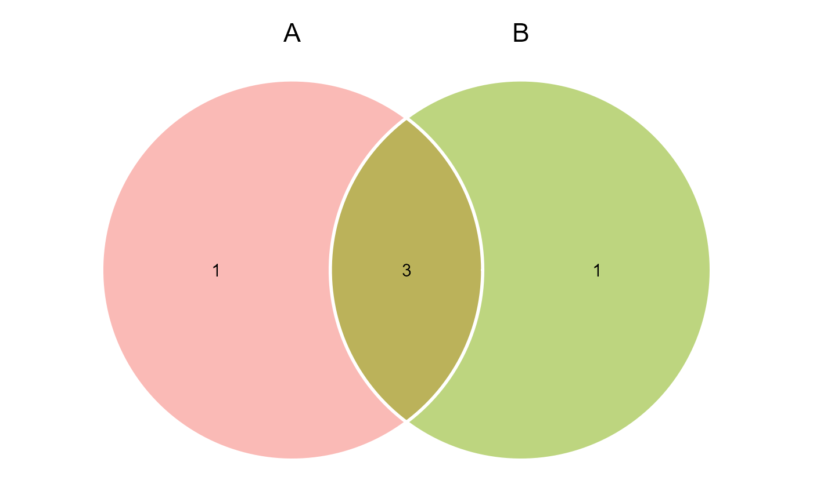
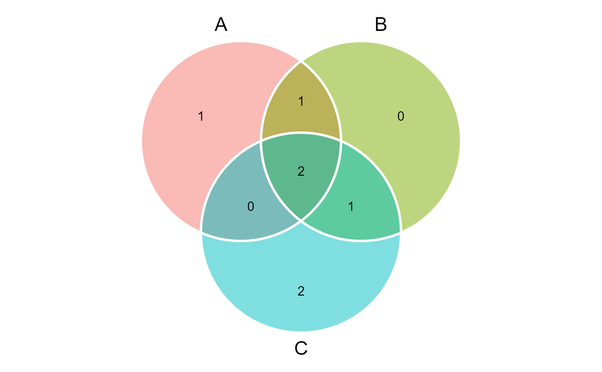
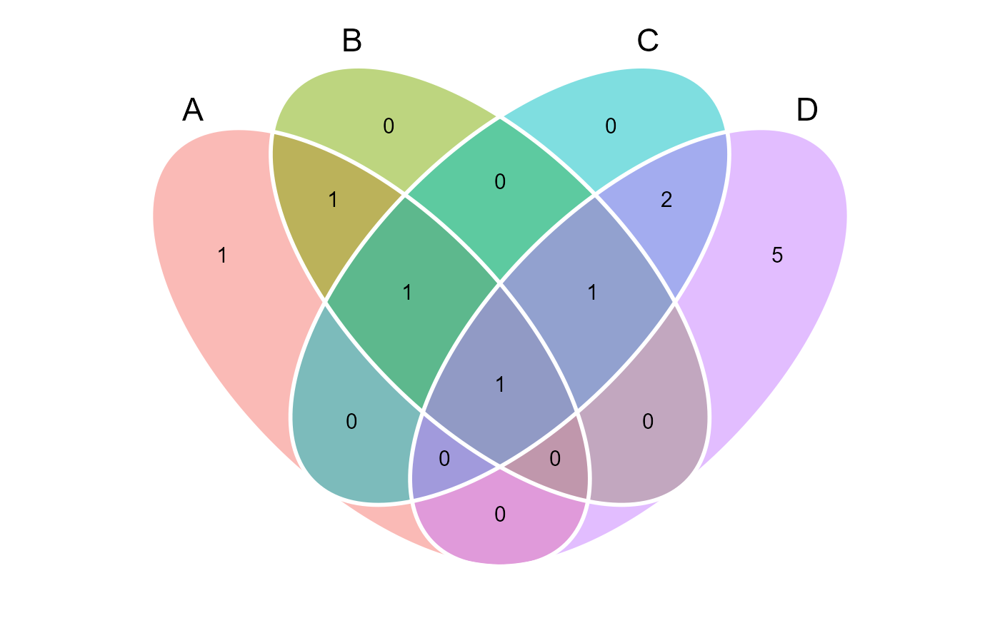
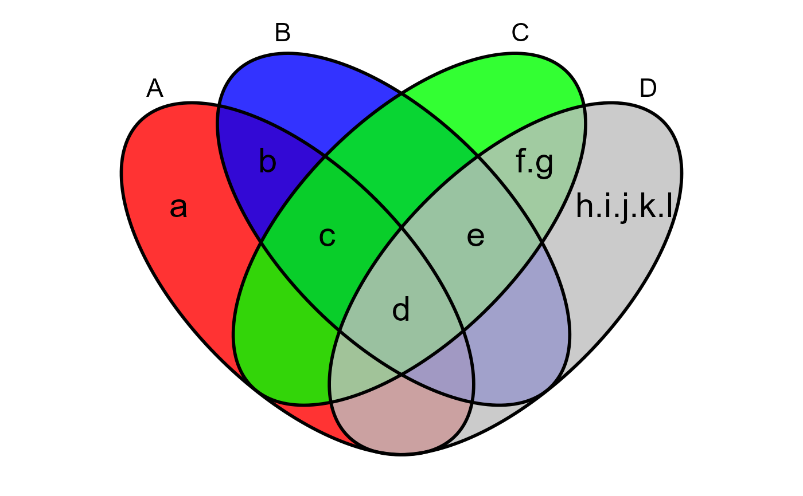

![[Stable]](figures/lifecycle-stable.svg)
Produces ggplot2-based Venn plots for 2, 3 or 4 sets. A Venn diagram shows all possible logical relationships between several sets of data.
venn_plot( ..., names = NULL, show_elements = FALSE, show_sets = FALSE, fill = ggplot_color(4), alpha = 0.5, stroke_color = "white", stroke_alpha = 1, stroke_size = 1, stroke_linetype = "solid", name_color = "black", name_size = 6, text_color = "black", text_size = 4, label_sep = "," )
Arguments
| ... | A list or a comma-separated list of vectors in the same class. If
vector contains duplicates they will be discarded. If the list doesn't have
names the sets will be named as |
|---|---|
| names | By default, the names of the sets are set as the names of the
objects in |
| show_elements | Show set elements instead of count. Defaults to |
| show_sets | Show set names instead of count. Defaults to |
| fill | Filling colors in circles. Defaults to the default ggplot2 color palette. A vector of length 1 will be recycled. |
| alpha | Transparency for filling circles. Defaults to |
| stroke_color | Stroke color for drawing circles. |
| stroke_alpha | Transparency for drawing circles. |
| stroke_size | Stroke size for drawing circles. |
| stroke_linetype | Line type for drawing circles. Defaults to |
| name_color | Text color for set names. Defaults to |
| name_size | Text size for set names. |
| text_color | Text color for intersect contents. |
| text_size | Text size for intersect contents. |
| label_sep | The separator for labs when |
Value
A ggplot object.
Author
Tiago Olivoto tiagoolivoto@gmail.com
Examples
# \donttest{ library(metan) (A <- letters[1:4]) #> [1] "a" "b" "c" "d" (B <- letters[2:5]) #> [1] "b" "c" "d" "e" (C <- letters[3:7]) #> [1] "c" "d" "e" "f" "g" (D <- letters[4:12]) #> [1] "d" "e" "f" "g" "h" "i" "j" "k" "l" # create a Venn plot venn_plot(A, B)  # Three sets venn_plot(A, B, C)  # Four sets venn_plot(A, B, C, D)  # Use a list dfs <- list(A = A, B = B, C = C, D = D) venn_plot(dfs, show_elements = TRUE, fill = c("red", "blue", "green", "gray"), stroke_color = "black", alpha = 0.8, text_size = 8, label_sep = ".")  # }